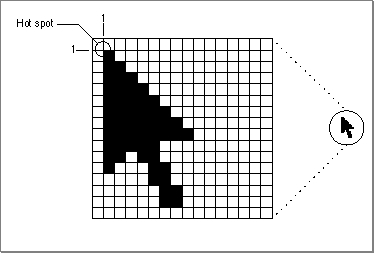

Legacy Document
Important: The information in this document is obsolete and should not be used for new development.
Important: The information in this document is obsolete and should not be used for new development.


Handling Operating-System Events
Operating-system events include suspend, resume, and mouse-moved events. Your application receives suspend and resume events as a result of changes in its processing status. Your application can request that the Event Manager return mouse-moved events whenever the cursor is outside a specified region by specifying a nonempty region in
themouseRgnparameter toWaitNextEvent. If you specify an empty region or aNILregion handle in themouseRgnparameter, the Event Manager does not report mouse- moved events.Your application examines the event record to determine which event it received and to obtain additional information associated with the event.
The
whatfield in the event record of an operating-system event contains theosEvtconstant.The
messagefield in the event record of an operating-system event contains information indicating whether the event is a suspend, resume, or mouse-moved event. Themessagefield also indicates whether Clipboard conversion is required when the application resumes execution. The bits in themessagefield give this information:
Bit Contents 0 0 if a suspend event 1 if a resume event 1 0 if Clipboard conversion not required 1 if Clipboard conversion required 2-23 Reserved 24-31 suspendResumeMessageif a suspend or resume eventmouseMovedMessageif a mouse-moved eventNote that you need to examine bits 24-31 of the
messagefield to determine what kind of operating-system event you have received. Bits 24-31 in themessagefield contain one of these two constants:
CONST suspendResumeMessage = $01; {suspend or resume event} mouseMovedMessage = $FA; {mouse-moved event}If the event is a suspend or resume event, you need to examine bit 0 to determine whether that event is a suspend or resume event. Bits 0 and 1 are meaningful only if bits 24-31 indicate that the event is a suspend or resume event. You can use theresumeFlagconstant to determine whether the event is a suspend or resume event. If the event is a resume event, you can use theconvertClipboardFlagconstant to determine whether Clipboard conversion from the Clipboard to your application's scrap is required:
CONST resumeFlag = 1; {resume event} convertClipboardFlag = 2; {Clipboard conversion required}Whenever the user performs a copy or cut operation, your application should copy the selected data either to its private scrap or, if your application doesn't have a private scrap, to the Clipboard. If your application uses a private scrap, you need to convert the data from your private scrap to the Clipboard whenever your application receives a suspend event. Likewise, you need to convert any data from the Clipboard (if it has changed) when your application receives a resume event. For resume events, the value of bit 1 of themessagefield is 1 if your application needs to read in the new contents of the Clipboard.Listing 2-13 shows a procedure that responds to operating-system events.
Listing 2-13 Responding to operating-system events
PROCEDURE DoOSEvent (event: EventRecord); BEGIN CASE BAnd(BRotL(event.message, 8), $FF) OF {get high byte} mouseMovedMessage: DoIdle(event); {mouse-moved same as idle for this app} suspendResumeMessage: DoSuspendResumeEvent(event);{handle supend/resume event} END; END;TheDoOSEventprocedure in Listing 2-13 is called from theDoEventprocedure (shown in Listing 2-3 on page 2-26) whenever the application receives an operating-system event. TheDoOSEventprocedure examines the high byte of themessagefield to determine whether the event is a mouse-moved, suspend, or resume event, and it then calls an application-defined procedure to handle the event. Note that most applications either adjust the cursor in response to mouse-moved events or adjust the cursor in their event loop whenever any type of event is received. The code in this chapter uses the latter approach, and thus theDoOSEventprocedure simply calls itsDoIdleprocedure in response to mouse-moved events. The next two sections show the code that handles suspend, resume, and mouse-moved events.Responding to Suspend and Resume Events
TheWaitNextEventfunction returns a suspend event when your application is about to be switched to the background.WaitNextEventreturns a resume event when your application becomes the foreground process again.Upon receiving a suspend event, your application should deactivate the front window, remove the highlighting from any selections, and hide any floating windows. Your application should also convert any private scrap into the global scrap, if necessary.
If your application shows a window that displays the Clipboard contents, you should hide this window also, as the user might change the contents of the Clipboard before returning to your application. Your application can also do anything else necessary to
get ready for a major switch. Then your application should callWaitNextEventto relinquish the processor and allow the Operating System to schedule other processes
for execution.Upon receiving a resume event, your application should activate the front window and restore any windows to the state the user left them in at the time of the previous suspend event. For example, your application should show scroll bars, restore any selections that were previously in effect, and show any floating windows. Your application should copy the contents of the Clipboard and convert the data back to its private scrap, if necessary. If your application shows a window that displays the Clipboard contents, you can update the contents of the window after reading in the scrap. Your application can then resume interacting with the user.
Responding to a suspend or resume event usually involves activating or deactivating windows. If you set the
acceptSuspendResumeEventsflag and thedoesActivateOnFGSwitchflag in your application's'SIZE'resource, your application is responsible for activating or deactivating your application's windows
in response to handling suspend and resume events.
Your application can use the Scrap Manager functions
- Note
- If you set the
acceptSuspendResumeEventsflag and do not set thedoesActivateOnFGSwitchflag in your application's'SIZE'resource, your application receives an activate event immediately following a suspend or resume event. In most cases, you should set both theacceptSuspendResumeEventsanddoesActivateOnFGSwitchflags in your application's'SIZE'resource.
InfoScrap,ZeroScrap,PutScrap,andGetScrapto read data from and write data to the Clipboard.
See the chapter "Scrap Manager" in Inside Macintosh: More Macintosh Toolbox for
additional details.
Listing 2-14 shows a procedure that responds to suspend and resume events. The
- Note
- If your application does not handle suspend and resume events (as indicated by a flag in its
'SIZE'resource), then the Operating System has to trick your application into performing scrap coercion to ensure that the contents of the Clipboard can be transferred from one applica- tion to another. This process adds to the time it takes to move the foreground application to the background and vice versa. uDoSuspendResumeEventprocedure first gets a pointer to the front window using
the Window Manager functionFrontWindow. It then examines bit 0 of themessagefield of the event record to determine whether the event is a suspend or resume event.
If the event is a resume event, the code examines bit 1 of themessagefield of the
event record to determine whether it needs to read in the contents of the scrap. If so,
the code calls an application-defined routine,MyConvertScrap, that reads in the
scrap and converts the contents to its private scrap. It then sets a private global flag,gInBackground, toFALSE, to indicate that the application is not in the background. It then calls another application-defined routine,DoActivate(shown in Listing 2-10), to activate the application's front window.For suspend events, the
DoSuspendResumeEventprocedure calls the application-definedMyConvertScrapprocedure to copy the contents of its private scrap to the global scrap. It then sets a private global flag,gInBackground, toTRUE, to indicate that the application is in the background. Finally, it calls another application-defined routine to deactivate the application's front window.Listing 2-14 Responding to suspend and resume events
PROCEDURE DoSuspendResumeEvent (event: EventRecord); VAR currentFrontWindow: WindowPtr; BEGIN {handle suspend/resume event} currentFrontWindow := FrontWindow; IF (BAnd(event.message, resumeFlag) <> 0) THEN BEGIN {it's a resume event} IF (BAnd(event.message, convertClipboardFlag) <> 0) THEN MyConvertScrap(kClipboardToPrivate); gInBackground := FALSE; {activate front window} DoActivate(currentFrontWindow, NOT gInBackground, event); MyShowClipboardWindow; {show Clipboard window if it was } { showing at last suspend event} MyShowFloatingWindows; {show any floating windows} END ELSE BEGIN {it's a suspend event} MyConvertScrap(kPrivateToClipboard); gInBackground := TRUE; {deactivate front window} DoActivate(currentFrontWindow, NOT gInBackground, event); MyHideClipboardWindow; {hide Clipboard window if showing} MyHideFloatingWindows; {hide any floating windows} END; END;Your application can receive processing time while in the background and perform tasks in the background, but your application should not interact with the user or perform tasks that would slow down the responsiveness of the foreground process.If you need to notify the user of some special occurrence while your application is executing in the background, you should use the Notification Manager to queue a notification request. See the chapter "Notification Manager" in Inside Macintosh:
Processes for examples of how to post notification requests.Responding to Mouse-Moved Events
Whenever the user moves the mouse, the mouse driver, the Event Manager, and your application are responsible for providing feedback to the user. The mouse driver performs low-level functions, such as continually polling the mouse for its location and status and maintaining the current location of the mouse in a global variable.As the user moves the mouse, the user expects the cursor to move to a corresponding relative location on the screen. The low-level interrupt routines of the mouse driver map the movement of the mouse to relative locations on the screen. Whenever the user moves the mouse, a low-level interrupt routine of the mouse driver moves the cursor displayed on the screen and aligns the hot spot of the cursor with the new mouse location. A hot spot is a point that the mouse driver uses to align the cursor with the mouse location.
Your application is responsible for setting the initial appearance of the cursor, for restoring the cursor after
WaitNextEventreturns, and for changing the appearance of the cursor as appropriate for your application. For example, most applications set the cursor to the I-beam when the cursor is inside a text-editing area of a document, and change the cursor to an arrow when the cursor is inside the scroll bar of a document. Your application can achieve this effect by requesting that the Event Manager report mouse-moved events if the user moves the cursor out of a region you specify in themouseRgnparameter to theWaitNextEventfunction.The mouse driver and your application control the shape and appearance of the cursor. A cursor can be any 256-bit image, defined by a 16-by-16 bit square. The mouse driver displays the current cursor, which your application can change by using various cursor- handling routines (for example, the
SetCursorprocedure).Figure 2-13 shows the standard arrow cursor. You can initialize the cursor to the standard arrow cursor using the
InitCursorprocedure. In Figure 2-13, the hot spot
for the arrow cursor is at location (1,1). See Inside Macintosh: Imaging for information on the cursor-handling routines and for specific details of how your application can define its own cursors.Figure 2-13 The standard arrow cursor

Figure 2-14 shows four other common cursors that are available to your application: the I-beam, crosshairs, plus sign, and wristwatch cursors.
Figure 2-14 The I-beam, crosshairs, plus sign, and wristwatch cursors
The I-beam, crosshairs, plus sign, and wristwatch cursors are defined as resources,
and your application can get a handle to any of these cursors by specifying their corresponding resource IDs to theGetCursorfunction. These constants specify the resource IDs for the I-beam, crosshairs, plus sign, and wristwatch cursors:
CONST iBeamCursor = 1;{used in text editing} crossCursor = 2;{often used for manipulating graphics} plusCursor = 3;{often used for selecting fields in } { an array} watchCursor = 4;{used to mean a lengthy operation } { is in progress}You can change the appearance of the cursor using theSetCursorprocedure or other cursor-handling routines. You can also define your own cursors, store them in resources, and use them as needed in your application.Your application usually needs to change the shape of the cursor as the user moves the cursor to different areas within a document. Your application can use mouse-moved events to accomplish this. Your application also needs to adjust the cursor in response to resume events. Most applications adjust the cursor once through the event loop in response to almost all events.
You can request that the Event Manager report mouse-moved events whenever
the cursor is outside of a specified region that you pass as a parameter to theWaitNextEventfunction. If you specify an empty region or aNILhandle to
theWaitNextEventfunction,WaitNextEventdoes not report mouse-moved events.If you specify a nonempty region in the
mouseRgnparameter to theWaitNextEventfunction,WaitNextEventreturns a mouse-moved event whenever the cursor is out of this region. For example, Figure 2-15 shows a document window. An application might define two regions: a region that encloses the text area of a window (the I-beam region), and a region that defines the scroll bars and all other areas outside the text area (the arrow region). By specifying the I-beam region toWaitNextEvent, the mouse driver continues to display the I-beam cursor until the user moves the cursor out of this region.Figure 2-15 The arrow region and the I-beam region
When the user moves the cursor out of the I-beam region,
WaitNextEventreports a mouse-moved event. Your application can then change the I-beam cursor to the arrow cursor and change themouseRgnparameter to the area defined by the scroll bars and
all other areas outside of the I-beam region. The cursor now remains an arrow until the user moves the cursor out of this region, at which point your application receives a mouse-moved event.Figure 2-16 shows how an application might change the cursor from the I-beam cursor to the arrow cursor after receiving a mouse-moved event.
Figure 2-16 Changing the cursor from the I-beam cursor to the arrow cursor
Note that your application should recalculate the
mouseRgnparameter when it receives a mouse-moved event; otherwise, it will continue to receive mouse-moved events as long as the cursor position is outside the original region.After receiving any event other than a high-level event, the MyEventLoop procedure (shown in Listing 2-2 on page 2-24) calls the application-defined procedure
MyAdjustCursorto adjust the cursor. After adjusting the cursor, if the event is an operating-system event, theDoEventprocedure calls theDoOSEventprocedure. TheDoOSEventprocedure calls theDoIdleprocedure for mouse-moved events. TheDoIdleprocedure simply callsTEIdleto blink the caret in the text-editing window.Listing 2-15 shows the application-defined routine
MyAdjustCursor.Listing 2-15 Changing the cursor
PROCEDURE MyAdjustCursor (mouse: Point; VAR region: RgnHandle); VAR window: WindowPtr; arrowRgn: RgnHandle; iBeamRgn: RgnHandle; iBeamRect: Rect; myData: MyDocRecHnd; windowType: Integer; BEGIN window := FrontWindow; {determine the type of window--document, modeless, etc.} windowType := MyGetWindowType(window); CASE windowType OF kMyDocWindow: BEGIN {initialize regions for arrow and I-beam} arrowRgn := NewRgn; ibeamRgn := NewRgn; {set arrow region to large region at first} SetRectRgn(arrowRgn, -32768, -32768, 32766, 32766); {calculate I-beam region} {first get the document's TextEdit view rectangle} myData := MyDocRecHnd(GetWRefCon(window)); iBeamRect := myData^^.editRec^^.viewRect; SetPort(window); WITH iBeamRect DO BEGIN LocalToGlobal(topLeft); LocalToGlobal(botRight); END; RectRgn(iBeamRgn, iBeamRect); WITH window^.portBits.bounds DO SetOrigin(-left, -top); {intersect I-beam region with window's visible region} SectRgn(iBeamRgn, window^.visRgn, iBeamRgn); SetOrigin(0,0); {calculate arrow region by subtracting I-beam region} DiffRgn(arrowRgn, iBeamRgn, arrowRgn); {change the cursor and region parameter as necessary} IF PtInRgn(mouse, iBeamRgn) THEN {cursor is in I-beam rgn} BEGIN SetCursor(GetCursor(iBeamCursor)^^); {set to I-beam} CopyRgn(iBeamRgn, region); {update the region param} END; {update cursor if in arrow region} IF PtInRgn(mouse, arrowRgn) THEN {cursor is in arrow rgn} BEGIN SetCursor(arrow); {set cursor to the arrow} CopyRgn(arrowRgn, region); {update the region param} END; DisposeRgn(iBeamRgn); DisposeRgn(arrowRgn); END; {of kMyDocWindow} kMyGlobalChangesID: MyCalcCursorRgnForModelessDialogBox(window, region); kNil: BEGIN MySetRegionNoWindows(kNil, region); SetCursor(arrow); END; END; {of CASE} END;TheMyAdjustCursorprocedure sets the cursor appropriately, according to whether a document window or modeless dialog box is active.For a document window, the code in Listing 2-15 defines two regions, specified by
thearrowRgnandiBeamRgnvariables. If the cursor is inside the region described
by thearrowRgnvariable, the code sets the cursor to the arrow cursor and returns the region described byarrowRgn. Similarly, if the cursor is inside the region described
by theiBeamRgnvariable, the code sets the cursor to the I-beam cursor and returns
the region described byiBeamRgn.The
MyAdjustCursorprocedure calculates the two regions by first setting the arrow region to the largest possible region. It then sets the I-beam region to the region described by the document's TextEdit view rectangle. This region typically corresponds to the content area of the window minus the scroll bars. (If your application doesn't
use TextEdit for its document window, then set this region as appropriate to your application.) The code then adjusts the I-beam region so that it includes only the part of the content area that is in the window's visible region (for example, to take into account any floating windows that might be over the window). The code then sets the arrow region to include the entire screen except for the region occupied by the I-beam region.The procedure then determines which region the cursor is in and sets the cursor and region parameter appropriately.
For modeless dialog boxes (for example, the Global Changes modeless dialog box), the
MyAdjustCursorprocedure calls an application-defined routine to appropriately adjust the cursor for the modeless dialog box. TheMyAdjustCursorprocedure also appropriately adjusts the cursor if no windows are currently open.